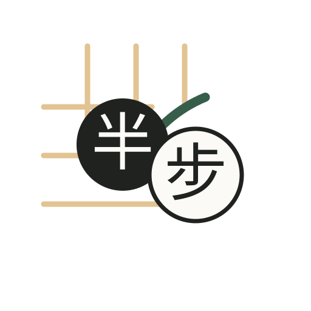
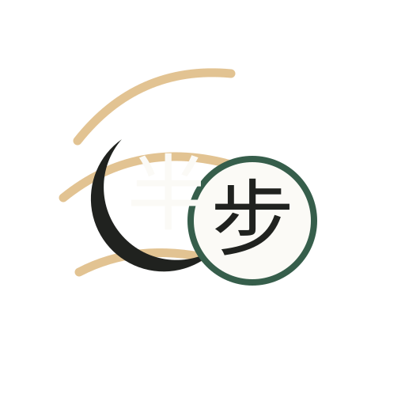
02 · 半月棋子
柔和、识别强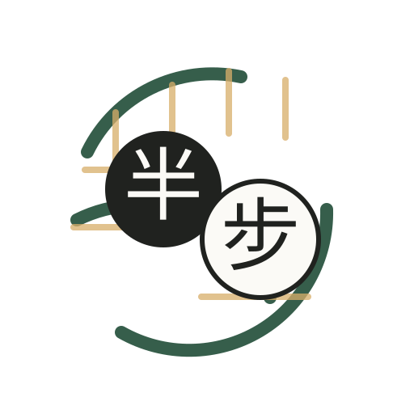
03 · 开环棋局
轻盈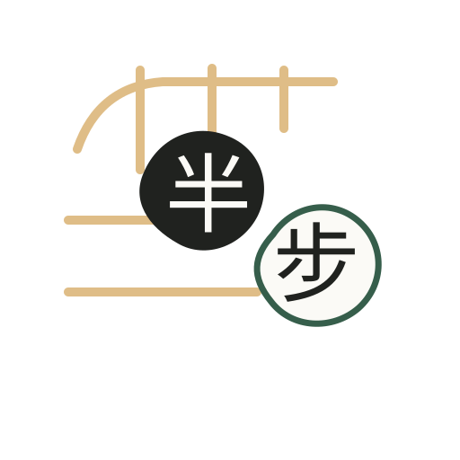
04 · 柔角棋盘
不规整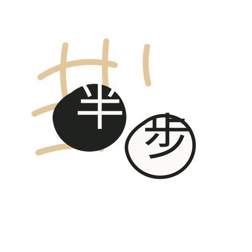
05 · 墨线分步
水墨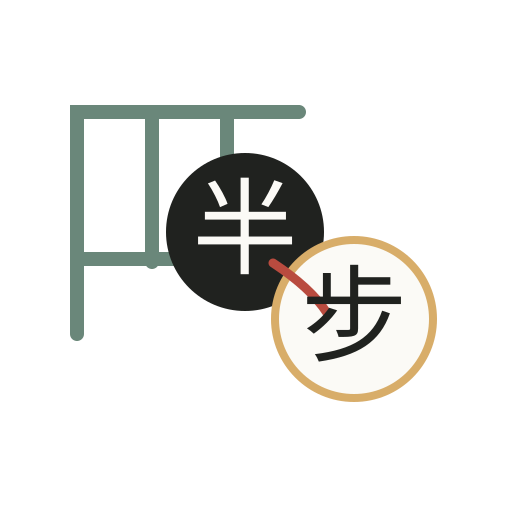
06 · 浮动角点
动态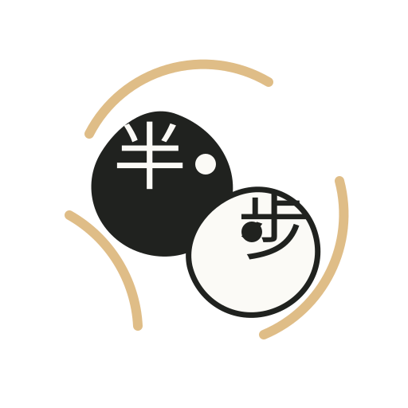
07 · 开放阴阳
非完整太极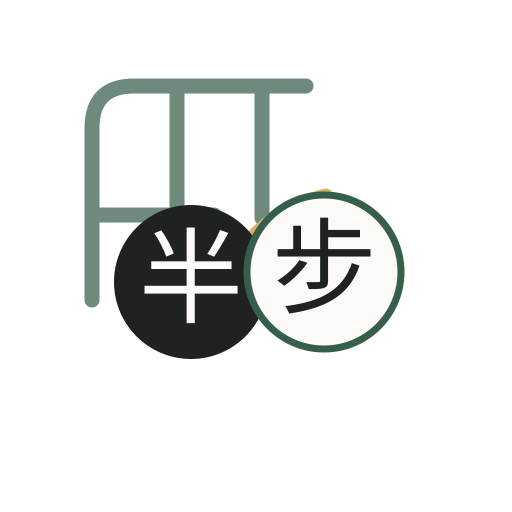
08 · 弧形棋盘
柔性棋盘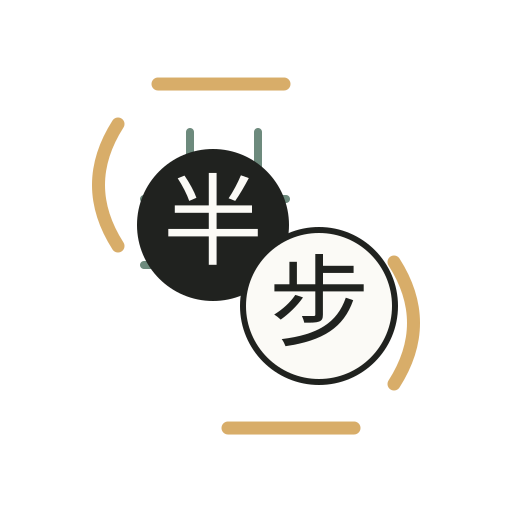
09 · 括号棋子
包裹感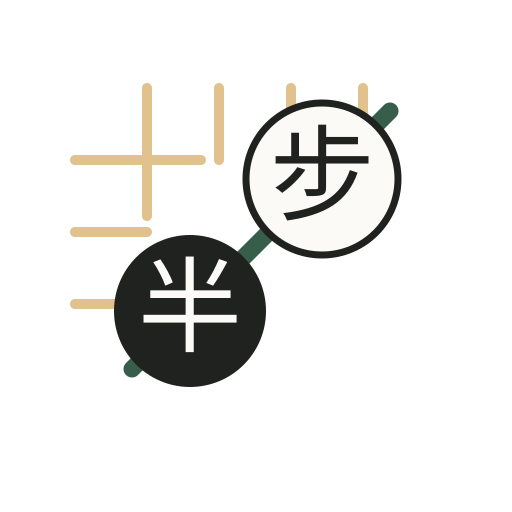
10 · 斜线落点
半步方向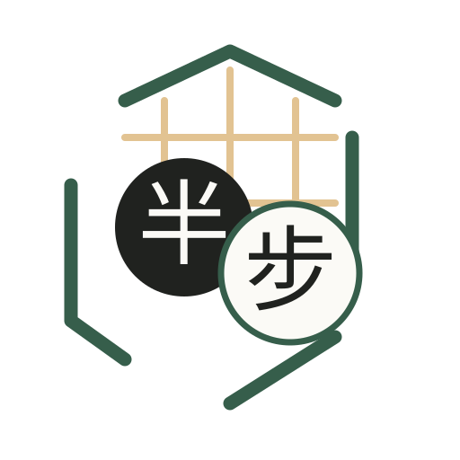
11 · 残缺六边
现代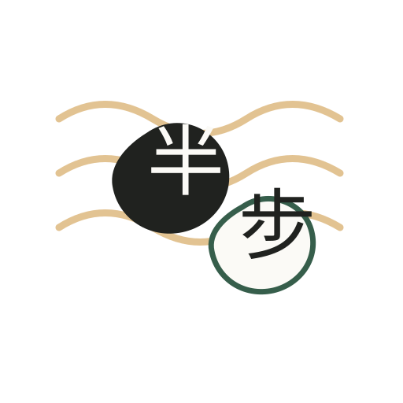
12 · 静水棋线
安静高级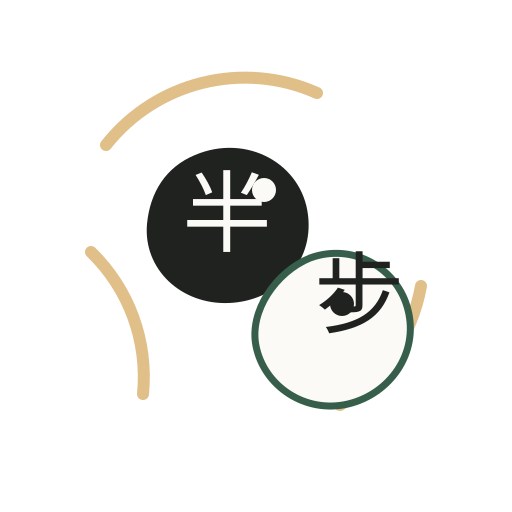
13 · 不完整阴阳
重点优化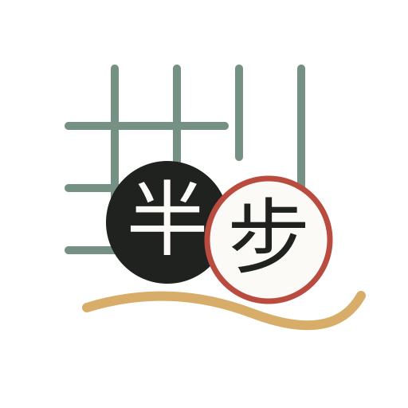
14 · 松散网格
不板正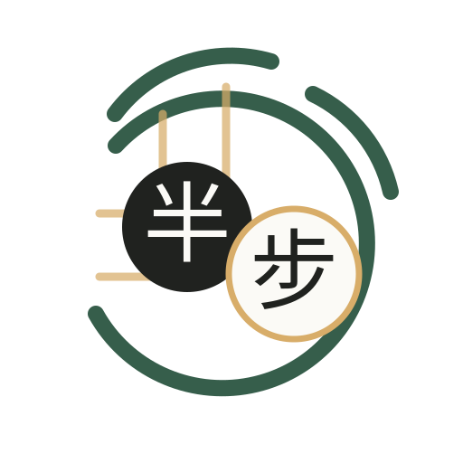
15 · 开口墨环
品牌感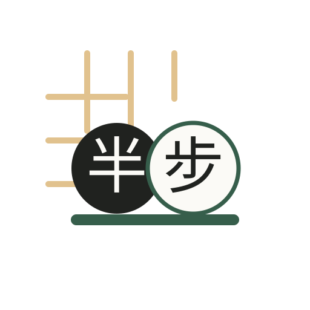
16 · 一线双子
清晰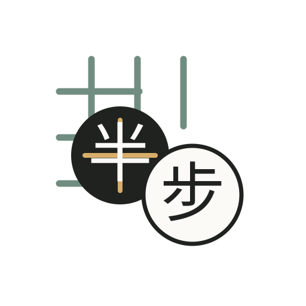
17 · 留白十字
极简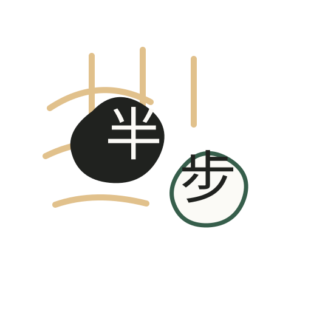
18 · 墨与象牙
材质感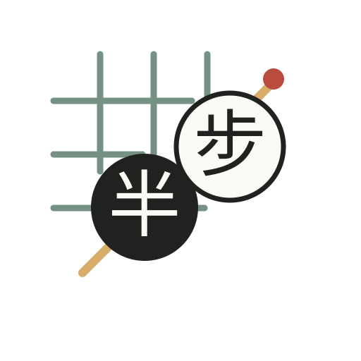
19 · 朱点胜线
竞技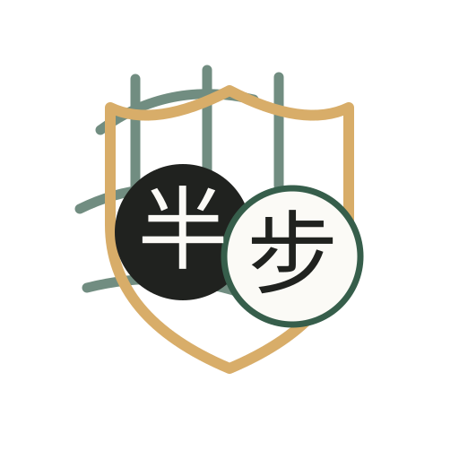